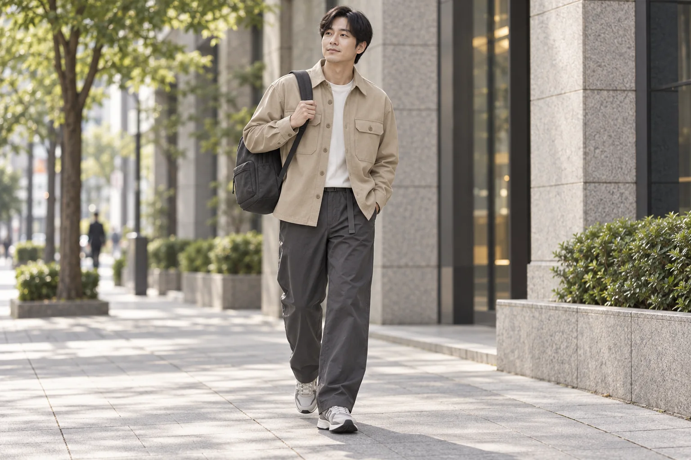
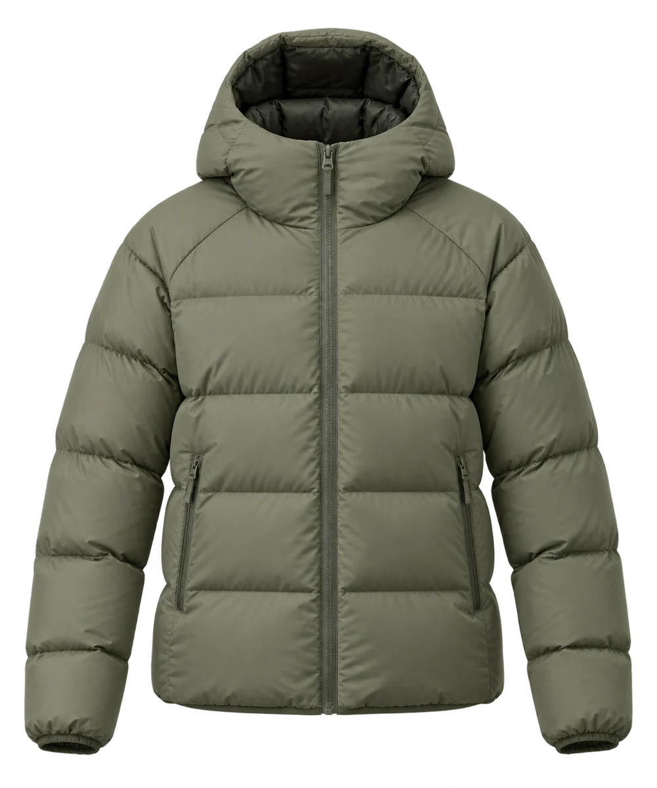

출근길엔, 단정한 조합
오버셔츠와 와이드 팬츠, 하루를 담는 백팩.
도심의 익숙한 길에서 시작해.
하루의 풍경을 가볍게 넓혀 보세요.
도시를 지나 만나는 하얀 능선.
일상 밖의 새로운 풍경을 마주합니다.
숲길을 걷는 느긋한 오후.
조금 더 멀리, 편안한 일상을 이어갑니다.
차분한 올리브, 맑은 스톤, 짙은 차콜.
좋아하는 분위기로 골라 보세요.

에브리데이 라이트 다운
189,000원
출근길부터 동네 산책, 주말의 숲길까지.
하루의 장면에 맞는 옷차림을 골라 보세요.

오버셔츠와 와이드 팬츠, 하루를 담는 백팩.
하프집업과 조거 팬츠에 캡 하나를 가볍게.
바람막이와 트레일 팬츠, 햇살 아래 버킷햇.